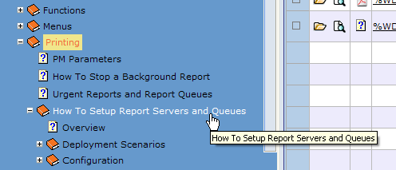
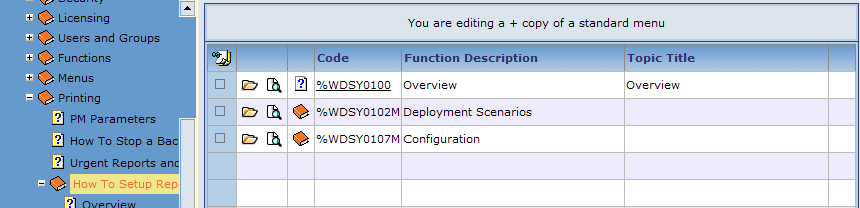
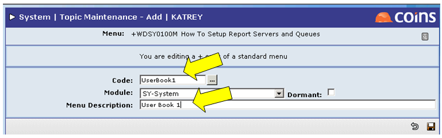

How to Add a User-defined Menu Book to a Plus Copy Menu Book:
- In the treeview, highlight the plus copy menu book to which you wish to add a user-defined menu book; for example, highlight "How to Setup Report Servers and Queues" (see Figure 1).
Figure 1: Highlighted Plus Copy Menu Book

- The message "You are editing a + copy of a standard menu" appears at the top of the screen (see Figure 2).
Figure 2: Plus Copy Message

- Select New menu book from the drop down menu at the bottom of the screen, then click Add
 to add a new user-defined menu book to the plus copy menu book; for example, add "UserBook 1" to the plus copy of the "How to Setup Report Servers and Queues" menu book (see Figure 3).
to add a new user-defined menu book to the plus copy menu book; for example, add "UserBook 1" to the plus copy of the "How to Setup Report Servers and Queues" menu book (see Figure 3).
Figure 3: Add New Menu Book

- When the next screen appears, enter a function name in the Code field; for example, enter UserBook1 (see Figure 4).
NOTE
Do not begin the code with a + or % sign.
Figure 4: Code and Menu Description fields

- Enter a Menu Description for this new user-defined menu book; for example, enter User Book 1 (see Figure 4).
- Click Save
 to save the user-defined menu book.
to save the user-defined menu book. -
Figure 5: New Menu Book on List

- Refresh the treeview by right-clicking it and choosing Refresh.